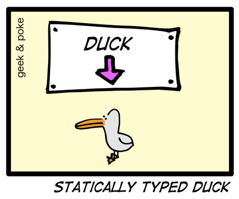

Now is better
Юрий Сыровецкий,
Привет.
Меня зовут Юра, я работаю в Яндексе,
и разрабатываю на Питоне.
В анонсе я написал, что хочу рассказать о том,
как выглядит Хаскелл глазами питониста,
но сегодня я вдруг передумал и решил,
что лучше расскажу вам про...
Python
...Питон.
Как-то подходит ко мне Гвидо наш ван Россум
и говорит:
У Питона, говорит, дела плохи.
Двойка уже безнадёжно устрела,
в Тройку ещё никто не верит.
Новички плюются, профи плачут.
Надо что-то радикально менять.
Я сразу проснулся и решил: да! надо менять.
Надо создать новый Питон,
свободный от грехов прошлого.
Идеальный язык двадцать первого века!
Назовём его, скажем...
[5]
...Питон 5.
Ну, по аналогии с Перлом 8.
5
Совместимость
Прежде всего, стоит сказать о совместимости.
Мы все видим,
как тяжело уже шестой год идёт переход на третий Питон,
и многие ещё до сих пор сидят на Двойке.
Традиции — это святое...
[ломаем]
...поэтому и пятый Питон не будет совместим
с предыдущими версиями.
Всё ради прогресса и развития,
ради клёвых новых штук и возможностей.
Уважая традиции,
Как определить константу?
Что же я включил в новый Питон?
Что мне больше всего не нравится в текущей версии —
это переменные.
Вот как вы определяете константы в Питоне?
[good]
Как-то так, верно?
Проблема в том,
что в Питоне нельзя определить константу таким образом.
Такая запись определяет изменяемую переменную.
[evil]
А если что-то можно изменить,
оно будет изменено в самый неподходящий момент,
что может повлечь самые неприятные последствия.
""" good.py """
MAGIC = 42
""" evil.py """
import good
good.MAGIC = 43
monkey.patch()
Кто-то использует эту возможность во благо.
Как бы во благо.
monkey.patch()
Потому что такой обезьяний жест говорит одновременно
и о плохой реализации вашей программы,
и о плохой архитектуре библиотеки,
которую приходится взламывать во время полёта.
Если бы автор предполагал,
что кто-то будет изменять поведение его кода на ходу,
он бы предоставил соответствующий интерфейс, верно?
Изменяемое и неизменяемое
Python 3
numbers = [2, 4, 6, 8]
product = 1
for n in numbers:
product *= n
print("The product is",
product)
The product is 384
Python 5
numbers = [2, 4, 6, 8]product <- var 1for n in numbers:
product *= n
print("The product is",
product)
The product is 384
Поэтому в Питоне 5 будет строгое разделение
констант и изменяемые величин.
Этот пример содержит три изменяемых —
"numbers", "product" и "n",
при этом фактически должна изменяться только "product".
[5]
В Пятёрке привычный синтаксис со знаком "равно"
будет использоваться для создания констант,
просто потому что это нужно гораздо чаще,
а для изменяемых будет введён новй синтаксис.
Пример работает точно так же,
но теперь программист будет чувствовать себя спокойнее,
ведь он знает,
что у него ничего лишнего неожиданно не изменится,
и ничего не развалится.
"evil.py" с предыдущего слайда больше не будет работать.
И это здорово!
Блоки и лямбды
Python 3
numbers = [2, 4, 6, 8]
product = 1
for n in numbers:
product *= n
print("The product is",
product)
The product is 384
Python 5
numbers = [2, 4, 6, 8]
product <- var 1for numbers: n -> product *= n
print("The product is",
product)
The product is 384
Следующее маленькое изменение с большим значением.
Давайте посмотрим, что будет,
если сделать блок кода объектом первого класса.
Он состоит из кода и принимает какие-то параметры.
Да это же наша старая знакомая лямбда-абстракция!
Синтаксис мы немножко изменим для удобочитаемости,
вместо ключевого слово "lambda" пусть будет стрелочка,
это красивее смотрится и быстрее набирается.
Многострочные лямбды!
for numbers: n ->
print("Current sub-product is", product)
product *= n
А блок с отступом после стрелки — это тело лямбды.
Да, ваши глаза вас не обманывают!
Это многострочные лямбды,
о необходимости которых всё время говорили большевики!
Что если я скажу вам,
что оператор "with" не нужен в Питоне?
Лямбды как блоки
Python 3
def example1():
with context() as c:
foo(c)
bar(c)
def example2():
@retry(n)
def _():
foo()
bar()
Python 5
def example1():
context(): c ->
foo(c)
bar(c)
def example2():
retry(n):
foo()
bar()
Когда мы используем оператор "with"?
Каогда нам нужно выполнить блок кода
в каком-то контексте, например,
выполнить какие-то операции до или после блока кода
или особым образом обработать исключения.
[python3/example2]
Но иногда нужно что-то чуть сложнее, например,
здесь надо попытаться выполнить блок кода ещё раз,
если он выполнился неуспешно.
В таких случаях оператор "with" не справляется,
и приходится изобретать что-то вот такое —
писать функцию со случайным именем
и передавать её в декоратор.
Но функция, которой не нужно имя, —
это же наша старая знакомая лямбда-абстракция!
[python5]
Соответственно,
мы можем просто передать функцию в функцию,
и внутри функции вызывать функцию
ноль, один или сколько угодно раз!
Таким образом,
оператор "with"
и отдельная концепция "менеджеров контекста"
становятся не нужны.
Проще синтаксис, проще язык, проще программы!
Лучше меньше, да лучше!
Можно и оператор "for" точно так же исключить,
хотя, это, пожалуй, слишком радикально.
def sepulcize(sepulcas):
return make_sepulcarium(sepulcas, bar=baz)
def make_sepulcarium(sepulcas, bar):
return foo(bar(sepulca)
for sepulca in walk_tree(sepulcas))
def foo(collection):
""" Fooize a collection """
...
def baz(bazable):
""" Increases bazability.
Takes a bazable item and
returns an even more bazable item. """
...
Ещё одна проблема,
мешающая мне жить и продуктивно работать.
Как выглядит
типичная относительно сложная библиотека на Питоне,
которую писали не вы?
Она состоит из примерно вот таких функций.
Видно,
что в этой функции заключено какое-то ценное знание.
И, зная предметную область,
можно примерно понять, что она делает.
Но передо мной стоит более важная задача —
понять, как эту функцию запрягать, —
что конкретно ей подавать на вход,
и что конкретно она возвращает.
Исходя из кода и имён переменных,
можно, наверное, предположить,
что на входе какая-то коллекция сепулек,
а на выходе сепулькарий.
Но какая коллекция? Здесь нужен список?
Или достаточно генератора?
Давайте посмотрим в "make_sepulcarium".
[make_sepulcarium]
Оукей.
Тут новые непонятные слова — "foo", "bar" и "walk_tree".
То есть сепульки — не список и не генератор,
а внезапно какое-то дерево.
Что за дерево? Поисковое? Префиксное? Пирамида?
"Bar" берётся из аргументов,
то есть надо вернуться назад и увидеть,
что "bar" — это на самом деле "baz".
Окей, смотрим, что такое "foo" и "baz".
[foo]
Тут какие-то совсем общие вещи,
никак не проясняющие ситуацию.
[итд]
И так далее.
Что мы можем с этим сделать?
Было бы здорово, если бы у нас был инструмент,
который может проанализировать код
и сразу ответить на вопросы,
как использовать эту функцию.
Такой инструмент называется...
Автоматический вывод типов
def sepulcize(sepulcas):
...
>>> from sepulcatools import *
>>> type(sepulcize)
sepulcize:
yandex.util.collections.Tree[Sepulca]
-> Optional[Sepulcarium]
...автоматический вывод типов.
Если язык может вывести тип за нас,
то зачем соглашаться на меньшее?
В данном случае мы просто спросим
у интерактивного интерпретатора тип функции,
и сразу получим ответ.
Мы сразу увидим, что на входе дерево,
и какое конкретно дерево здесь требуется.
И — внезапно — оказывается, что на выходе "Optional",
то есть надо предусмотреть
случай возврата пустого значения.
Такую особенность мы могли легко пропустить,
просто читая код.
Статическая типизация
А вывод типов работает
только при поддержке в языке статической типизации.

Многие фанаты динамической типизации считают,
что статическая типизация — это что-то лишнее,
что утка всегда утка,
и принудительное указание типов только отнимает время
при написании и чтении программ.
JavaRDD<String> file = spark.textFile("hdfs://...");
JavaRDD<String> words = file.flatMap(
new FlatMapFunction<String, String>() {
public Iterable<String> call(String s) {
return Arrays.asList(s.split(" "));
}
}
);
JavaPairRDD<String, Integer> pairs = words.mapToPair(
new PairFunction<String, String, Integer>() {
public Tuple2<String, Integer> call(String s) {
return new Tuple2<String, Integer>(s, 1);
}
}
);
JavaPairRDD<String, Integer> counts = pairs.reduceByKey(
new Function2<Integer, Integer>() {
public Integer call(Integer a, Integer b) {
return a + b;
}
}
);
counts.saveAsTextFile("hdfs://...");
Статическая типизация не обязана быть навязчивой
file = spark.textFile("hdfs://...")
words = file.flatMap(s -> s.split(" "))
pairs = words.mapToPair(s -> (s, 1))
counts = pairs.reduceByKey((a, b) -> a + b)
counts.saveAsTextFile("hdfs://...")
Типизация по желанию
def distance((x1, y1), (x2, y2)):
return sqrt((x2 - x1) ** 2
+ (y2 - y1) ** 2)
Типизация по желанию
distance:
((Float, Float), (Float, Float)) -> Float def distance((x1, y1), (x2, y2)):
return sqrt((x2 - x1) ** 2
+ (y2 - y1) ** 2)
class Color(Enum):
Red
Green
Blue
def html_code(Red): return "#ff0000"
def html_code(Green): return "#00ff00" Error: html_code(Blue) is not defined
print(html_code("Green")) Error: Couldn't match expected type ‘Color’
with actual type ‘str’
Рефакторинг без боли!
HTML и шаблонизация
Welcome to {{ eventname }}!
Welcome to !
print("Welcome to {eventname}!"
.format(event="Python&Admin Party"))
Traceback (most recent call last):
...
KeyError: 'eventname'
Welcome to {{ eventname }}!
"Welcome to " + to_html(eventname) + "!"
str — html_escapeMarkdown — render_markdownHTML — как естьOptional/NoneType — ошибка!
## Статическая типизация ускоряет разработку
* Позволяет находить ошибки быстро
* Позволяет спать спокойно
* Делает код самодокументируемым, упрощая чтение
* В отличие от текстовой документации, типы всегда актуальны
Интерпретатор
$ ls
hello.py
$ python5 hello.py
Hello world!
Невалидная программа не запустится
Компилятор
$ ls
hello.py
$ py5compile hello.py
$ ls
hello hello.py
Нативный машинный код
Скорость исполнения
## Haskell похож на Python
* Отступы в 4 пробела
* Переменная создаётся при первом присваивании
* Необязательные аннотации типов
* Иерархическая система модулей
## Haskell — то, о чём я мечтал
* Разделение изменяемого и неизменяемого
* Многострочные лямбды
* Статическая типизация
* Автоматический вывод типов
* Мощная система типов
* `runhaskell` для запуска скриптов
* Генерация кода из шаблонов со статической проверкой — shakespeare и другие библиотеки
* Нет GIL!
Учиться, учиться и учиться
Развивайтесь.
Не останавливайтесь на достигнутом.
Изучайте новое.
Изучайте функциональное программирование.
Изучайте Хаскелл.
Хаскелл вовсе не так сложен, как принято думать.
Даже если вы не будете программировать на Хаскелле,
вы можете почерпнуть много интересных приёмов
для программирования на других языках,
в том числе на Питоне.